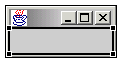
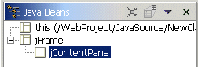

The content pane is created automatically when you drop a javax.swing class that supports content panes. Also, the New Visual Class wizard creates a content pane for those classes that directly inherit from javax.swing content pane type classes.
However, the content pane will not be created when dropping a subclass of a javax.swing class, or when the New Visual Class wizard is used to create a subclass of a subclass. The reason is that it is assumed that the subclass has already provided a content pane, and put things in it. This prevents the content pane from being accidentally wiped out. The visual editor cannot change this inherited content pane in any way, but it can replace it. To do this, use the popup menu on the subclass and select Create Content Pane.
The top level Swing window classes have a privileged child container known as the content pane. The content pane is the client area that the window's components are dropped on. When you first use a Swing window in the Visual Editor for Java it will create an explicit content pane that is available for you to drop components onto using the Design view. The figure below shows a JFrame with its content pane selected. Note that the selection handles are not around the JFrame itself but around its client area.

The Java Beans view also shows the contentPane as the child of the JFrame.

To create the contentPane as a child, a Java bean is explicitly created and set into the contentPane of the window, as shown in the example generated code below.
private javax.swing.JPanel getJContentPane() {
if(jContentPane == null) {
jContentPane = new javax.swing.JPanel();
jContentPane.setLayout(new
java.awt.BorderLayout());
}
return jContentPane;
}
private javax.swing.JFrame getJFrame() {
if(jFrame == null) {
jFrame = new javax.swing.JFrame();
jFrame.setContentPane(getJContentPane());
}
return jFrame;
}
}
The explicitly created content pane has its layout manager set to java.awt.BorderLayout
because this is the implicit default value returned by the JFrame's content pane.
The Swing window classes for which a content pane is created as a child container are:
The Visual Editor does not work with implicit contentPanes. It will generate code to explicitly set a JPanel as a content pane if it is not already there. Typically it is recommended that contentPanes be generated as a seperate Bean; dropped on / set as the contentPane.
If you are using Hummingbird Exceed 7.1 as an X server on Windows, the content pane for a javax.swing.JFrame and other frames will not show or size correctly. It is recommended that you use a Linux X Server to work with the Visual Editor for Java.